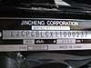

vehicle_identification_number

Definition: A vehicle identification number (VIN) (also called a chassis number or frame number) is a unique code, including a serial number, used by the automotive industry to identify individual motor vehicles, towed vehicles, motorcycles, scooters and mopeds, as defined by the International Organization for Standardization in ISO 3779 (content and structure) and ISO 4030 (location and attachment).There are vehicle history services in several countries that help potential car owners use VINs to find vehicles that are defective or have been written off.
Source: Wikipedia
Wikipedia Page
Wikidata Page